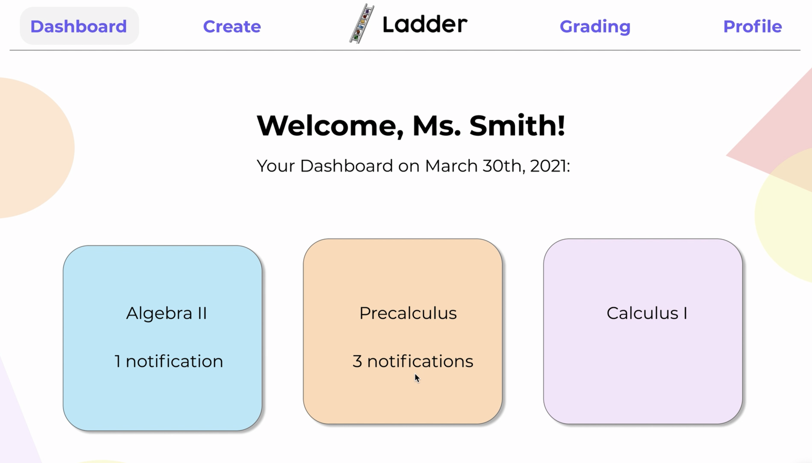
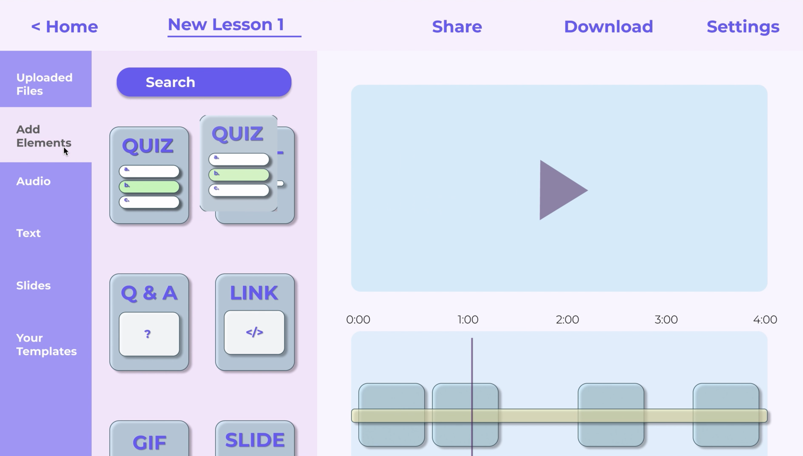
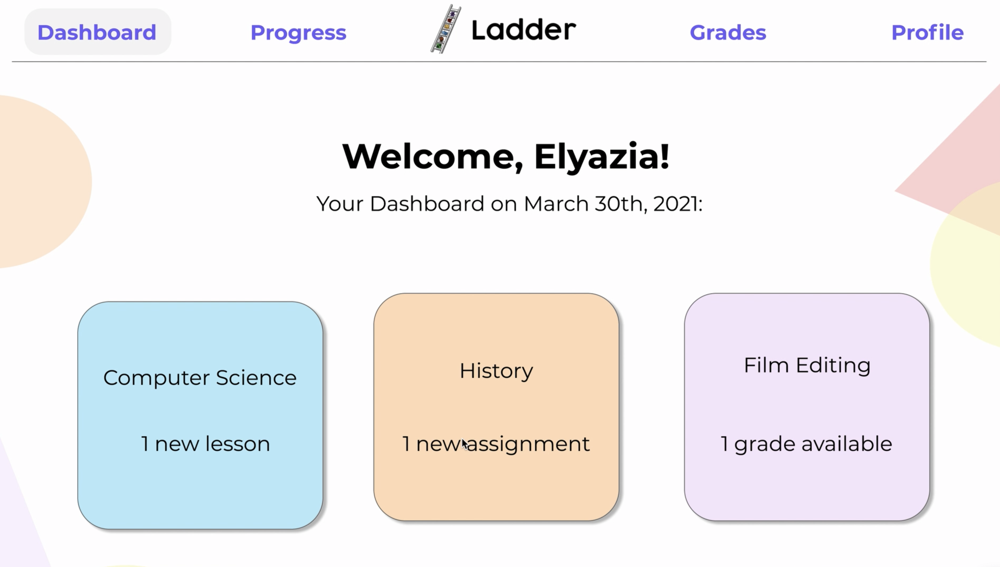
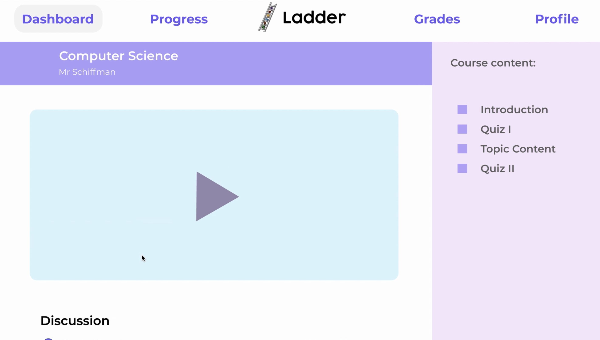

About
Deborah Agboola
Projects
Ladder
CEO, Project Manager
@ Start AD
An intuitive E-learning platform that helps teachers create interactive lessons by integrating animations and quizzes
Project Overview
Ladder is an E-learning platform that helps teachers create interactive lessons for their students by integrating animations and quizzes into one mind-gripping video.
I founded Ladder in 2020 while participating in StartAD’s YouthTech competition. StartAD is an organisation that helps equip regional startups from tech and non-tech industries with the tools, skills and frameworks to excel in the UAE. Their YouthTech competition invited young innovators to develop tech-enabled solutions for some of the greatest global challenges in the sectors of Education, Economy, Infrastructure, and Society.
The YouthTech competition equipped participants with training and tools to develop entrepreneurial projects that have the potential to become startups. Once I learned about this opportunity and came up with an impressive idea, I recruited a friend with valuable skills and experience and as a team, we applied to the programme with nothing but an idea.
Ladder was one of 98 teams chosen to progress to the next stage, an intense 2-day bootcamp during which I learnt how to ideate, do customer research and pitch to investors. Following the bootcamp, all teams had to submit a pitch video that would determine if they could progress to the next stage.
Out of the 98 teams that applied, my team was 1 of 15 shortlisted teams. The final part of the competition was pitching our startup to a group of judges who would decide the winners. Though Ladder did not win, we gained so many invaluable skills including leadership, communication, strategic thinking and problem solving.
In 2021, Ladder was 1 of 5 teams nominated to participate in StartAD’s InnoVention competition, a 7-week incubator program wherein we participated in workshops, coaching sessions and mentorship in order to turn Ladder from an early-stage startup into a scalable business. During this time, we developed a prototype and pitched out startup in front of entrepreneurs and leading professionals.
Motivation
Ladder was born during the summer of 2020. I was at home with nothing much to do, preparing myself mentally for the upcoming semester that would take place entirely online. The last half of my freshman year was on Zoom, and I had lost my motivation to study. While doing online learning, I got bored, lost focus to the point where it impacted my academic life. Having spoken to a lot of my classmates, I discovered that this was an issue that most students were experiencing too.
Despite these issues, I saw the value in doing my classes on Zoom. I could study from the comfort of my room, rewatch my lectures and learn at my own pace. But I didn’t see the value in this if the impact was mostly harmful. Then I started thinking about what a perfect lesson would look like to me: one where I could learn from home whilst being engaged throughout.
And then Ladder was born! I came up with Ladder as a solution to the negative impacts of online learning, which are brain fog, demotivation and boredom. After speaking to both teachers and students, we discovered that teachers lack the tools to create engaging lessons. Hence our aim was to create an easy-to-use platform that would enable teachers to create interactive and fun lessons that would reignite students’ motivation and passion for learning!
What is Ladder?
To put it simply, Ladder is if Canva was a lesson-making tool rather than a graphic design one. It offers a user-friendly interface and a variety of design tools, animations and a quiz-maker to help teachers create interactive and engaging lessons with ease.
There are two interfaces: a teacher interface and a student interface.
1) Teacher Interface
 a) Lesson-maker: teachers can add videos, images, audio, animations and timed quizzes all into one interactive online lesson
b) Assignments: teachers can assign individual student or group assignments, which can be submitted in video or word form
c) Chatroom: teachers and students can communicate with each other via the chatroom
d) Progress: teachers can monitor students’ individual and overall progress in the class
2) Student Interface
 a) Dashboard: a welcome page that notifies students of their upcoming deadlines, new lessons or available grades
b) Progress: students can track their progress throughout the semester and view their contributions
c) Personal Ladder: students have a personal ladder where they can set their goals and monitor their progress visually
d) Discussion: students can discuss specific points in the video with their classmates
e) Course content: the sections of the lesson will be displayed
Customer Research
Ladder’s target market is schools, which are made up of students and teachers. Hence, if we could convince schools that Ladder could help teachers and students boost overall grades, then Ladder would fit perfectly into the E-learning market. In order to do that, though, we needed to understand our customers and what they want. What are students lacking? What do teachers need that they don’t already have? What is the ultimate goal of schools? As a team, we helped ourselves answer these questions by creating a survey, which we distributed to both high-school and university students studying a variety of courses.
The following questions were asked in the survey:
1) What online platform does your teacher/ professor use?
2) What did you like about online classes?
3) What did you dislike about online classes?
4) Roughly how long can you stay focused on virtual classes?
5) What negative impact has this had on your personal or professional life?
6) What educational platforms do you use to learn outside of your classes?
7) What tools do these platforms use that help you maximise your engagement?
The aims of these questions were to understand how students feel about online classes and what impact this has on their lives. A total of 82.1% of participants stated that they used Zoom for their online classes. Most students mentioned that they enjoyed taking classes from the comfort of their own home and rewatching lectures in their own time. However, 100% of them reported that they find online classes disengaging. Only 5% claim that they can focus till the end of a 60-minute class, and 90% of them state that this has affected their personal and professional lives negatively. Some students struggle with brain fog, headaches and their mental health. Several students also reported that they experienced a huge drop in their grades.
Due to their inability to learn during their online lessons, students turned to educational platforms such as Khan Academy, Youtube and Coursera to relearn concepts that they failed to grasp during class, wasting time that they could have spent relearning a new skill or participating in extracurricular activities. Though, the students still preferred these platforms to Zoom, and 70% of survey participants stated that this is due to the interactivity of the lessons and the quizzes that allowed them to test their knowledge.
Aside from the survey, we also had one-on-one meetings with 5 professors to gain an understanding of their experience during online learning. All professors stated that their primary challenge was trying to engage their students, but lacking the tools to do so.
From analysing this data, we concluded that Ladder needed to be a tool that bridged the gap between teachers and students, providing an easy-to-use interface for teachers to create interactive online learning for their students.
Business Model
Ladder is a B2B company - though our target market is teachers and students, our product would be sold to schools. Hence, we needed to convince schools that we are worth paying for.
The global E-learning market was estimated at $144 billion dollars in 2019. In the UAE alone, the e-learning sector was valued at 3 billion dirhams in 2019, and is estimated to reach 4.7 billion dirhams by 2023.
Our business model was subscription-based, wherein schools would pay a monthly subscription fee to have access to all the features of the Ladder platform. We chose a subscription-based model because it would enable us to have a more predictable source of revenue, allowing us to plan and forecast more effectively.
Design Objectives
1) Aesthetics
We wanted the website to evoke feelings of calm, hence we opted for pastel colours in the design of the web page. This is because we want students to feel relaxed when using Ladder, as opposed to anxious and bored like they often felt when using Zoom. Pastel colours also represent playfulness, which we want to encourage in our users. We want teachers to experiment with the variety of tools and feel comfortable using them to design interactive lessons.
2) Logo
Our logo includes a ladder graphic, with a different coloured icon on each step of the ladder. Each icon represents a different sector of education - we want Ladder to be used for each and every course, hence we wanted the logo to represent different types of students, from the artistic ones to the science ones. The font is Caros Soft Medium, which is a sans-serif font that evokes a sense of modern simplicity, reliability and stability. The curved/ rounded letters also give it a more childish feel which we felt fit in with the educational theme. We struggled choosing between the bold version and the regular version, but settled on the regular version because the bolder version made it look even more childish, as it emphasised the roundness even more.

3) Slogan
We wanted Ladder’s slogan to be concise, memorable and to align with our brand values. We chose “Your Interactive Learning Hub” because it sounds short, sweet and gets straight to the point. It highlights what we do, which is create interactive lessons; the use of the personal pronoun ‘your’ makes Ladder sound more personable and gives the audience ownership over the brand; and the word ‘hub’ evokes a sense of centrality, connectivity, and organisation. In the context of technology, it also evokes a sense of efficiency, reliability, and functionality.
Some other slogans that we had in mind were: ‘Taking steps towards greatness’ - this nicely referred to ‘steps’ which links to the company name, Ladder, however, it is too broad; ‘giving every single person the opportunity to learn’ - it does not highlight what is special about Ladder; ‘Motivating students to learn’ - nice and short, but again, doesn’t tell us how Ladder is special.
Prototypes
For the first prototype, I used Canva to design a wireframe of what I expected the teacher interface to look like. The ‘Create a Lesson’ page had the different tools clearly labelled at the top, so teachers could easily click and begin creating. The drag-and-drop feature is extremely intuitive and allows teachers to use Ladder without prior technical knowledge. Any uploaded images or videos would appear at the side of the screen, very much like in Canva. And the finished video would come together with a simple click of a button!
The second prototype was created using Figma, which allowed us to start adding some interactivity to the prototype. The designs on the landing page were created using Photoshop - it displays cutouts of different students, with pastel-coloured shapes layered on top. This was a deliberate design choice made to look like a collage, which fits in with the youthful theme of the website. The videos below demonstrate what both the teacher and the student interface look like once you sign up.